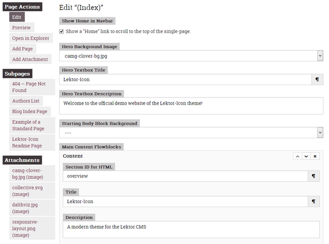
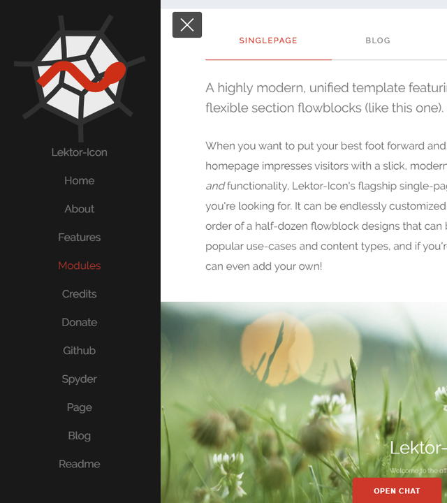

Lektor-Icon
Welcome to the demo website of the Lektor-Icon theme!
Lektor-Icon
A modern theme for the Lektor CMS
This a heavily modified and expanded version of the FreeHTML5 "Icon" template ported to the Lektor static CMS by Daniel Althviz and the Spyder development team; it was initially derived from the Hugo port of the Icon theme by Steve Lane. The core template is a single-page, responsive layout, with sections for describing your organization and its mission, services, a gallery, your team and how visitors can download your software or donate to your cause.
It also features additions including a built-in blog, generic page template, custom error page, common navbar, Gitter, Disqus, RSS/Atom and OpenCollective integration, heavy customizability, numerous fixes and improvements, and re-written for speed, extensibility, responsiveness and conformance. The theme is designed to be more desktop and mobile-friendly, and designed and tested to smoothly adapt to a wide variety of viewport sizes from well below 480px all the way to 4K, and closely follows modern web standards while still offering compatibility with a wide range of modern and legacy browsers.
Features

Flexible Design
Developed specifically to offer maximum customizability and adaptability both within pages and in the overall structure and organization of the site, while requiring a minimum of deep technical knowledge or awareness of edge-cases from content creators and gracefully handling missing or ambiguous field values.

Responsive Layout
Optimized for both desktop and mobile, and both portrait and landscape orientations; and individually tuned for a range of screen sizes from 360p to 4K without kludgy device detection, just media queries, adaptive sizing and responsive images.
A highly modern, unified template featuring numerous flexible section flowblocks (like this one).
When you want to put your best foot forward and make sure your homepage impresses visitors with a slick, modern, and approachable feel and functionality, Lektor-Icon's flagship single-page template is just what you're looking for. It can be endlessly customized with any number and order of a half-dozen flowblock designs that can be adapted to many popular use-cases and content types, and if you're still not satisfied you can even add your own!
A clean, content-focused blog design with pagination and automatic author ID cards.
Get your message out and keep your viewers up to date with our fully functional blog module. You and your contributors can easily create and edit posts, add images and interactive content, and publish it to the web all with simple markdown in a text editor, or the even simpler Lektor admin GUI. Your audience can share their feedback with built-in Disqus comments support, and can subscribe to the optional RSS/Atom feed so they never miss an update.
A minimalist model sharing the navbar, footer and basic style with the rest of the theme, allowing for extensive customization.
Sometimes a stock page design, no matter how flexible or varied, just isn't enough—maybe you want to include traditional article-style pages on your domain, design a template to meet specific requirements, or just a blank canvas to fill with your ideas that still fits in with the rest of the site. For all of those cases and more, Lektor-Icon offers an standard page model, which includes all the standard <head>, navigation and footer elements from the rest of the theme along with simple, clean and consistent styling, allowing you to easily include long-form content, make your own templates while retaining all the advantages of the themes, or style it to your heart's content.
Example Screenshots
{kind=link}
{kind=link}
{kind=link}
Credits
The key people and organizations without which this theme wouldn't be possible.
(Note: Inclusion here does not imply endorsement, association or any direct involvement with the theme in its current form.)

FreeHTML5.co
Original Template Creator
Created the original "Icon" plain HTML template, on which Hugo-Icon was based.
Steve Lane
Hugo-Icon Theme Creator
Ported the "Icon" template to Hugo and converted it into a jinja-templated theme.
Daniel Althviz Moré
Lektor-Icon Theme Porter
Ported the Hugo-Icon theme to Lektor, revamping it and adding new features and styling in the process. Also helped create the original blog templates.
Spyder Team
Theme Maintainers
Has taken primary responsibility for maintaining and enhancing the theme further, in particular to support our use of it on the official Spyder website.
Third Party Assets
JS Libs, Icon Fonts and Styles
Lektor-Icon includes a number of icon font glyphs, third-party styles and Javascript libraries in the final product. Check out NOTICE.txt for more.
You!
Community Contributors
Lektor-Icon welcomes your help in making this theme better for everyone. Anyone can submit a PR or participate in development!

Donate
Help support Spyder's activities!